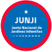
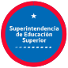

Consultas
Orientación normativa: Destinado a entregar orientaciones sobre la normativa educacional y conocer el estado de su requerimiento.
En el marco de la Ley N.° 20.529, que crea el Sistema de Aseguramiento de la Calidad de la Educación, ejerce sus facultades para asegurar una educación de calidad, promoviendo el cumplimiento de los deberes, la igualdad de oportunidades y la protección de los derechos de niños, niñas y jóvenes en todo el país.
Orientación normativa: Destinado a entregar orientaciones sobre la normativa educacional y conocer el estado de su requerimiento.
Tiene como objetivo facilitar el diálogo y fortalecer la capacidad que tienen los establecimientos para abordar de manera oportuna los conflictos que puedan afectar la convivencia escolar, para ello contempla distintos mecanismos, tales como:
Su objetivo es verificar el cumplimiento de la normativa educacional por parte de los establecimientos educativos y que estos adopten las medidas correspondientes.
La Superintendencia de Educación cuenta con las siguientes facultades que le permiten impulsar el cumplimiento de la normativa educacional y el resguardo de los derechos:
Orientar y entregar información sobre la normativa educacional vigente y los derechos de los miembros de la comunidad educativa.
Recibir y gestionar requerimientos tales como consultas, solicitudes de mediación y denuncias sobre hechos que pueden constituir una infracción o una vulneración de derechos establecidos en la normativa educacional.
Fiscalizar que se cumpla la normativa educacional y que los recursos entregados por el Estado se utilicen correctamente.
Promover la resolución colaborativa de conflictos al interior de las comunidades educativas para fortalecer la convivencia y la calidad educativa.
Antes de ingresar su requerimiento, revise la siguiente información para confirmar si los hechos a ingresar son de competencia de otros organismos.
Búsqueda de matrícula, Sistema de Admisión Escolar, certificados de estudios, Identificador Provisorio Escolar, certificados de Alumnos Prioritarios, uso de plataforma SIGE, autorizaciones para el ejercicio de la docencia, Reconocimiento Oficial, modificación de datos personales en documentos oficiales educacionales, detalle de subvenciones entregadas por RBD, ránking de notas, legalización o apostilla de certificados.

Denuncias respecto a cupos, reclamos con funcionarios de jardines pertenecientes a las entidades.
Denuncias respecto a cupos, reclamos con funcionarios de jardines pertenecientes a las entidades.

Hechos o faltas ocurridas en universidades, institutos profesionales o centros de formación técnica.
Requerimientos respecto a computadores entregados por la institución, becas, programas de alimentación y Tarjeta Nacional Estudiantil.
Ingreso de Recursos de Protección ante vulneración de derechos educacionales. Temas de alcance judicial.
Denuncias por temas contractuales de docentes y asistentes de la educación, así como responsabilidades administrativas de establecimientos particulares (subvencionados y pagados).
Denuncias por temas contractuales de docentes y asistentes de la educación, así como responsabilidades administrativas de establecimientos públicos.
Requerimientos relacionados a contratos de prestación de servicios educativos entre privados.
Para más información, revisa los recursos complementarios de la Supereduc, aquí